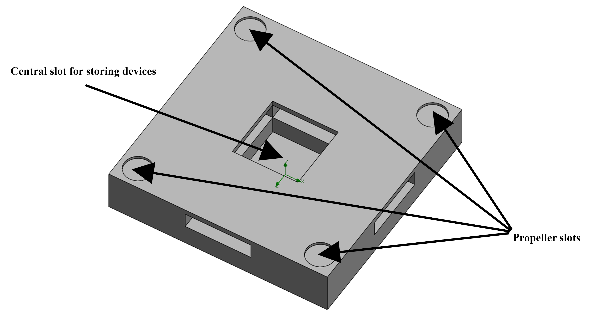
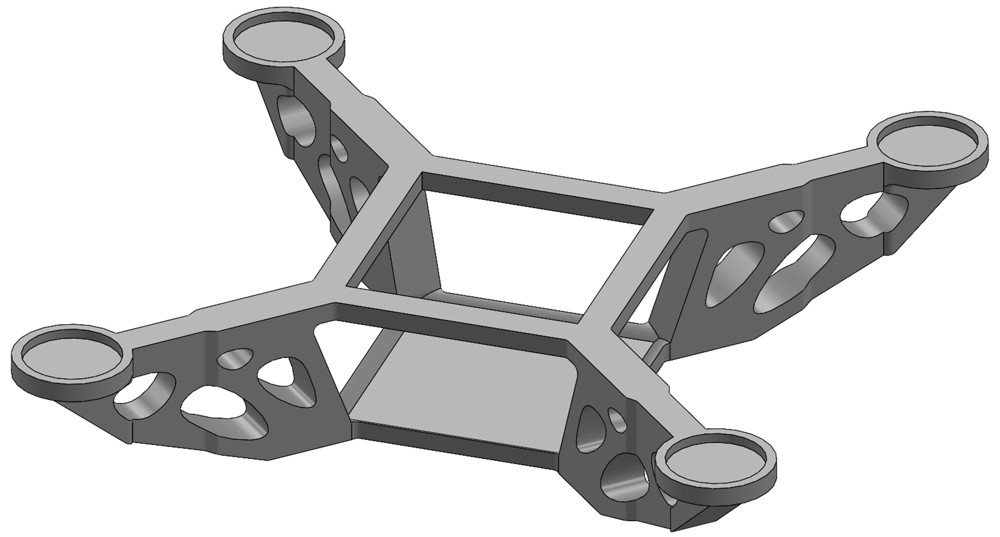
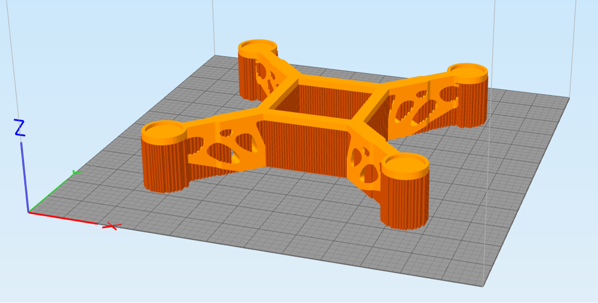
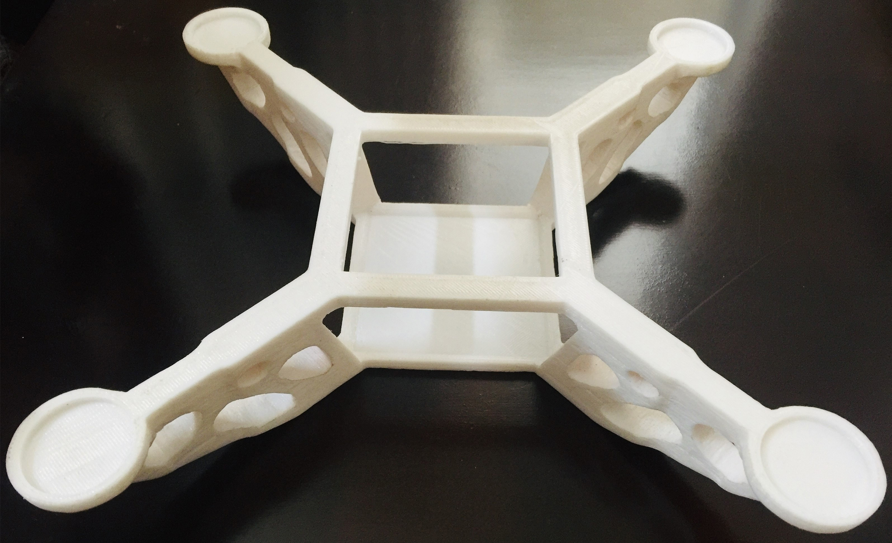
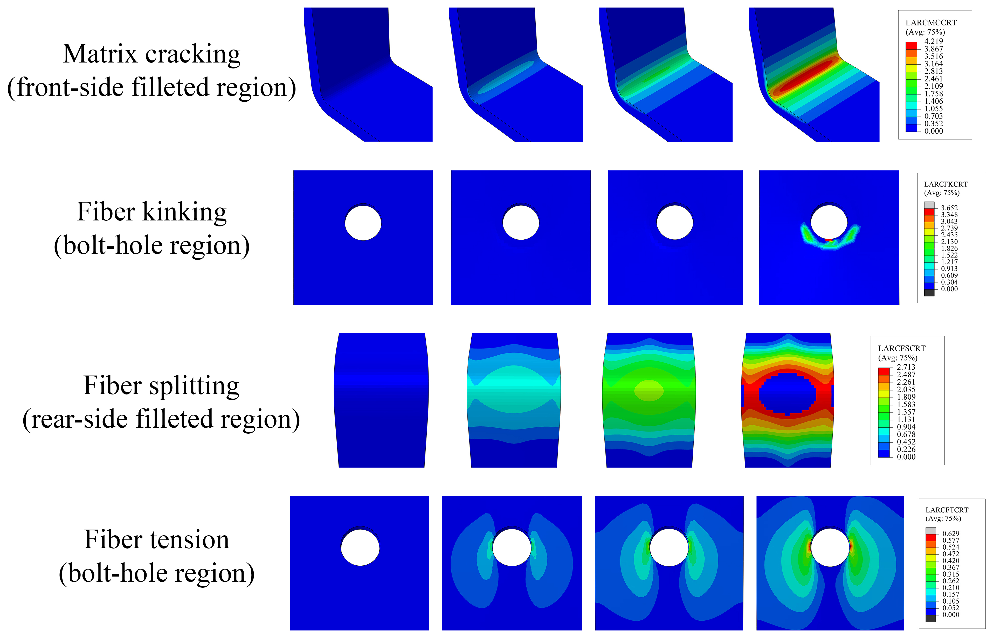
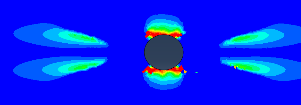

International Conference Proceedings
PUBLICATIONS






1. Topology optimization and 3D printing of a unibody quadcopter airframe
- Authors: S.H. Asif, K. Hasan, N.R. Dhar
- Softwares used: SolidWorks, Simplify3D
- The mass of a quadcopter central airframe was reduced by 91%. Static structural analysis, fatigue analysis & CFD tests were performed. Then, the frame was 3D printed through the Fused Deposition Modelling (FDM) technique.
- Accepted & Presented in The 2nd International Conference on Mechanical Engineering and Applied Sciences, 2022
2. Parametric study on progressive failure analysis of composite bolted T-joints based on LaRC05 failure criterion
- Authors: S.H. Asif, K. Hasan, N.R. Dhar
- Softwares used: ABAQUS, MATLAB
- A parametric study was conducted on CFRP bolted T-joints using the LaRC05 failure initiation criterion. The FEA results suggested on the shape & ply-stack orientations to be considered for using CFRP bolted T-joints as structural fasteners.
- Accepted & Presented in The 2nd International Conference on Mechanical Engineering and Applied Sciences, 2022
3. Progressive Failure Analysis of Carbon Fiber Reinforced Polymer Composite with a Circular Notch by varying Fiber Orientation
- Authors: A.B. Yousuf, S.H. Asif, K. Hasan, M.J.U. Rumi
- Softwares used: ABAQUS, MATLAB
- Stress concentration around a circular notch was investigated for laminated CFRP materials.
- Accepted & Presented in The 2nd International Conference on Mechanical Engineering and Applied Sciences, 2022
- Best Presented Paper award
4. Structural analysis and topology optimization of an aircraft bracket under multi-axial loading
- Authors: A.B. Yousuf, T.M.B. Kamal, S.H. Asif
- Softwares used: ANSYS, MATLAB
- Topology optimization of an aircraft bracket was carried out.
- Accepted & Presented in The 2nd International Conference on Mechanical Engineering and Applied Sciences, 2022
Work Address
Military Institute of Science and Technology,Mirpur Cantonment,
Dhaka, Bangladesh